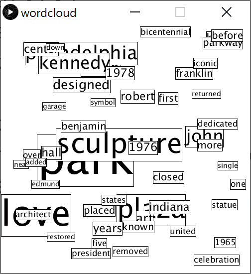

Assignment 9: Word cloud
Due Thursday, December 10, before midnight
The goals for this assignment are:
-
Define and use functions and objects
-
Use selection sort
1. Description
The goal of this assignment is to draw word clouds. The following cloud was created from articles written about the Love statue in Philadelphia. In the demo below, pressing the 'r' key computes a new cloud, '+' adds one word to the cloud, '=' subtracts one word from the cloud, and 'd' toggles whether we show bounding boxes or not.
A word cloud arranges words such that those that appear more often in a text are largest. To arrange the words, we draw each word from most occurrences to least (e.g. from biggest to smallest), ensuring that each new word we draw does not overlap with the ones we already drew.
In this assignment, you are given a text file that lists words and counts. Your job is to read in the file and arrange the corresponding words into a word cloud.
2. Requirements
1) Define a class, called Tile, to represent each word.
-
Tilecontains the following data:-
word (String): the word on the tile
-
count (int): the number of occurrences of the word in the text
-
x coordinate (float): the left side of the tile
-
y coordinate (float): the top of the tile
-
width (float): the width of the tile based on the text size and word
-
height (float): the height of the tile based on the text ascent and descent
-
text size (int): the font size (based on the count)
-
isVisible (boolean): whether or not the tile should be drawn
-
-
Tilecontains the following methods:-
constructor with parameters for
wordandcount.isVisibleshould be true initially. The size should be a function of the count. Above, we use the formula3 * count + 8, where 8 is the minimum font size. The width and height should be computed using the font size and word. -
intersects(Tile)method. This method returns true if the given tile intersects this tile and false otherwise. -
draw(debug)method. Ifdebugis true, draws both the text and the bounding box. Ifdebugis false, just draw the text. -
getCountmethod (Accessor). Returns the count associated with this tile. -
getSizemethod (Accessor). Returns the font size of this tile. -
getWordmethod (Accessor). Returns the word of this tile. -
getWidthmethod (Accessor). Returns the width of this tile. -
getHeightmethod (Accessor). Returns the height of this tile. -
getXmethod (Accessor). Returns the x coordinate of this tile. -
getYmethod (Accessor). Returns the y coordinate of this tile. -
setXY(float,float)method (Mutator). Sets the value of x and y for this tile. -
setVisible(boolean)method (Mutator). Sets whether this tile should be visible of not -
getVisiblemethod (Accessor). Returns whether this tile should be visible or not
-
3) In setup, load the file "word-counts.txt" and initialize an array of Tile, one for each line in the file.
4) In setup, print the first 10 tiles from the file to the console. Implement your print to console in the function printTiles(Tile[],int).
5) In setup, sort the tiles based on the counts in descending order, from largest count to smallest. Implement your sorting algorithm in sortByCount. Print the first 10 tiles after sorting using printTiles.
6) In setup, compute (x,y) positions for the N largest tiles. Choose random positions for these tiles such that it doesn’t overlap with previously placed words. When looking for an open spot to place a word, you might not find one. Implement a max number of times to look for a random spot to place a word. If none is found, print a message to the console and hide that tile (call setVisible(false)) so it is not drawn. Below is psuedocode for this algorithm
// Algorithm for placeTiles(tiles, N)
for the first N tile in tiles
x,y = generate a random point on the canvas
tile.setXY(x,y)
numTries = 100
while intersectsPreviousTiles(tile, tiles) and numTries > 0
x,y = generate a random point on the canvas
tile.setXY(x,y)
numTries = numTries - 1
if numTries <= 0
tile.setVisible(false)7) In draw, draw all the tiles. Pass the global variable, drawDebug, to each tile’s draw function to determine whether bounding boxes should be shown.
8) In keyPressed, implement the following commands
-
'd' key: toggle the global variable,
drawDebug -
'r' key: call
placeTilesto create a new arrangement of tiles -
'+' key: increase the number N of words used in the cloud. Don’t allow N to be larger than the number of tiles. Call
placeTilesto recompute the cloud. -
'-' key: decrease the number N of words used in the cloud. Don’t allow N to be smaller than 1. Call
placeTilesto recompute the cloud.
3. Starter code
You have basecode for this assignment. Check dropbox.
4. What to hand-in
-
The complete program (Don’t forget your header comment!)
-
A brief write-up with your name, course and assignment number and a few sentences about anything you found challenging about the assignment.
5. Submission guidelines
Submit your program (entire sketch directory), write-up, and image as an electronic copy in the folder marked A05 in your dropbox folder.
6. Hints and advice
This assignment ties together several concepts from previous assignments in a non-trivial way!
If you don’t know where to start, here is a recommended approach
1) Implement the Tile class first. Some methods, such as intersects and draw can be implemented later, but you should implement the constructor, accessors, and mutators. The base code outlines what these are.
2) Load in the file into an array of Tile. This is similar to assignment 07. For each line, parse the line into word and count and use these values to create new Tile objects.
3) Implement the function printTiles. This function should loop through your array of tiles and print the word and count for each. Below is the console output when n is 10.
dixon:2
year:1
evolved:1
hall:5
undergoing:2
building:2
near:2
welcome:2
brand:1
13:14) Implement the function sortByCount. Then call printTiles again (with N = 10) to check that your sort is working, you should get
park:27
love:21
sculpture:16
plaza:15
city:13
philadelphia:10
kennedy:9
john:9
art:6
designed:65) Implement placeTiles but don’t worry about intersection testing. Draw all your words with random positions. Make sure the bounds around each word is correct and that words have good relative sizes.

6) Enhance your cloud so that words do not overlap. Implement isClear and Tile.intersects. Your intersection algorithm will need to be modified from the one we used for the video game to account for the following case:
An easy way to deal with the above situation is to consider the cases where we know two boxes do not intersect.
-
If a tile’s left side (e.g x position) is to the right of us (e.g. greater than mX + mWidth), then we don’t intersect
-
If a tile’s top side (e.g. y position) is below us (e.g. greater than mY + mHeight), then we don’t intersect
-
If a tile’s right side (e.g. x+width) is to the left of us (e.g. less than mX), then we don’t intersect
-
If a tile’s bottom side (e.g. y+height) is to above us (e.g. less than mY), then we don’t intersect
Implement the above rules in Tile.intersects.
7) Once you have a basic cloud drawing, implement the keyboard controls
Gotchas and more advice
-
Be careful about what draw mode you use for your tiles. This writeup assumes that we are using corner mode.
-
Start by drawing only 2 or 3 words
-
When looking for an open spot to place a word, you might not find one (infinite loop!). Implement a max number of times to look for a random spot to place a word. If none is found, print a message to the console and hide that tile so it is not drawn.